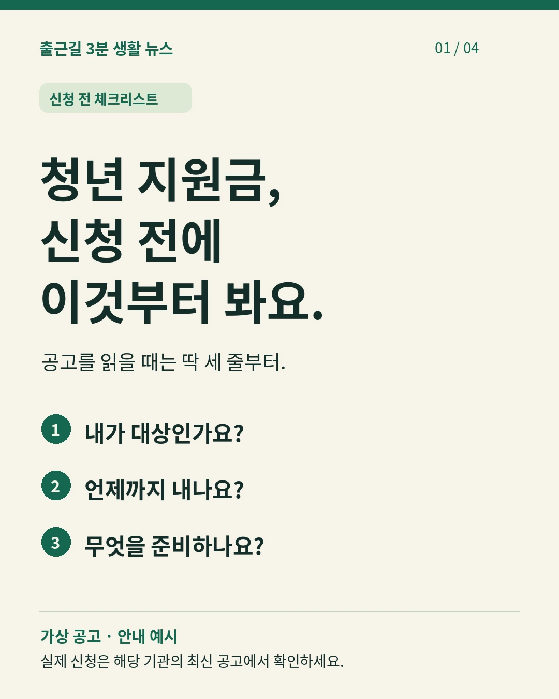
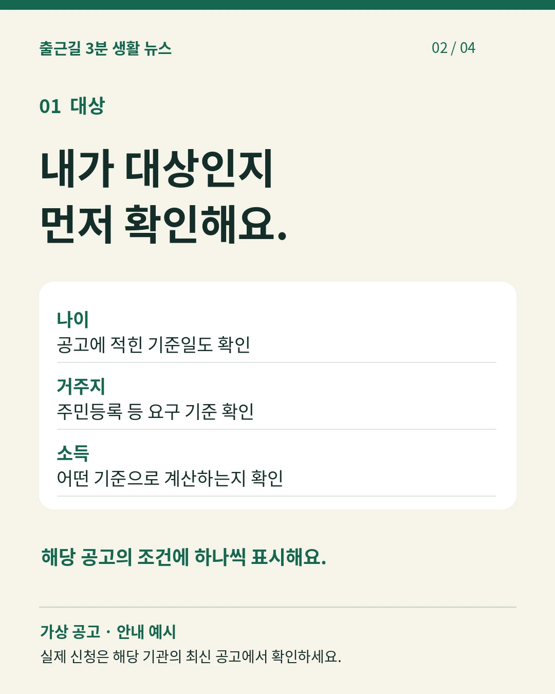
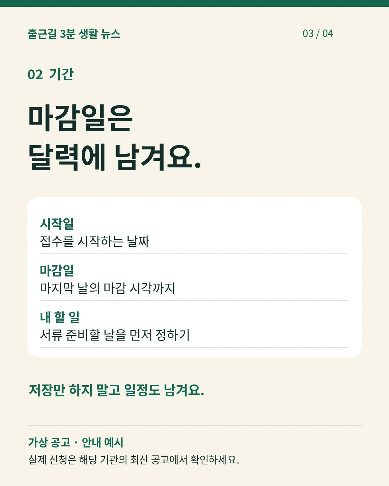
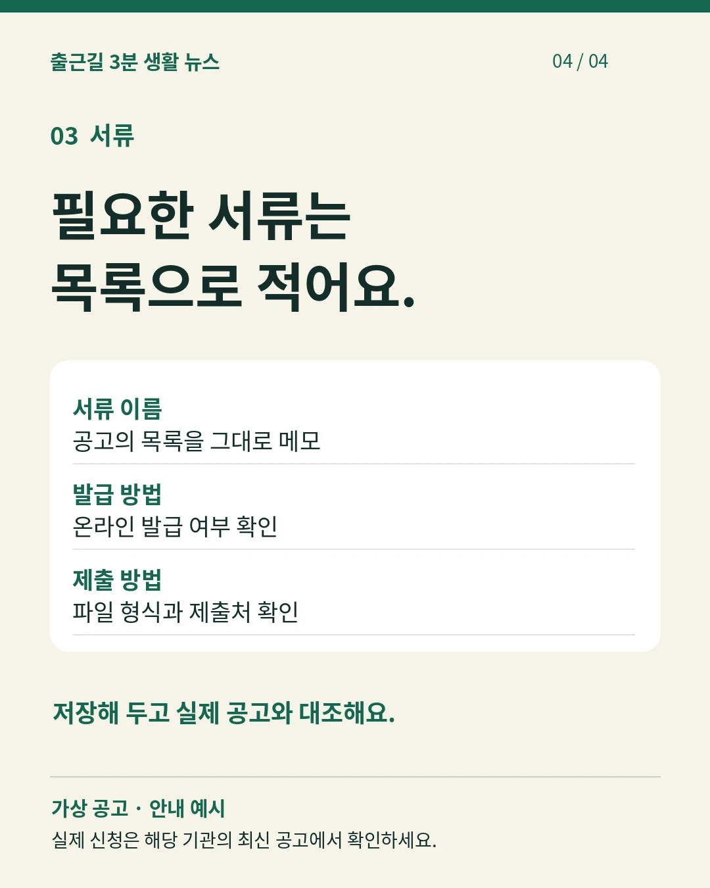

문안과 장면을 맞춘 편집 견본
가상 계정의 창작 생활정보예요. 영상은 한국어 합성음으로 읽어요. 원고·권리·재현 방법과 확인한 범위

첫 장은 독자가 궁금해할 세 질문으로 시작해요.

대상 조건을 확인하고 해당 공고에 표시해요.

저장한 소식을 달력에 적는 행동으로 이어 가요.

서류는 이름·발급·제출을 한 묶음으로 적어요.
월급날 네 칸 메모 · 38.667초
낭독하는 칸을 강조하고 같은 문장을 두 줄 자막으로 보여 줘요. 신호음 시험과 비교해 볼 완성 목표예요.
대본 · 자막 · 장면별 시간 · 합성음 원본